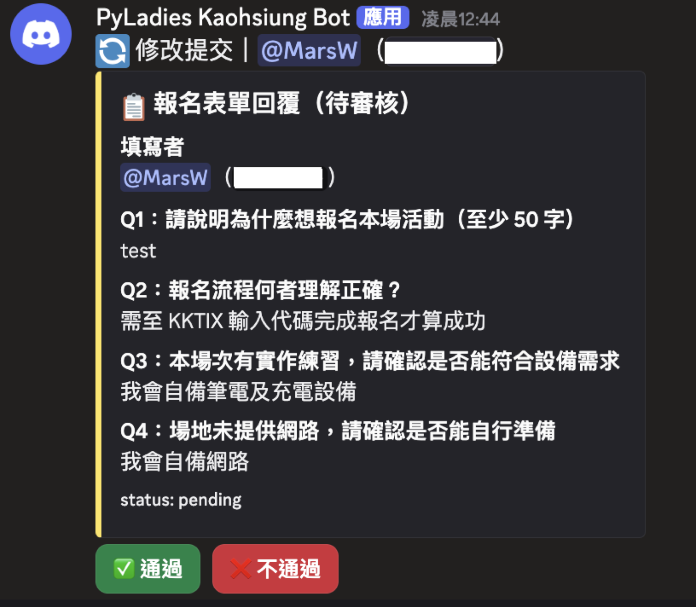
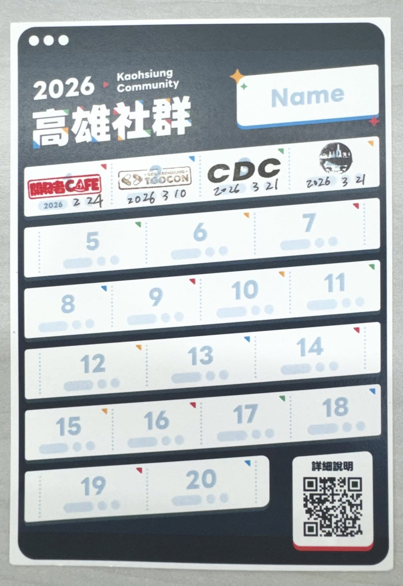
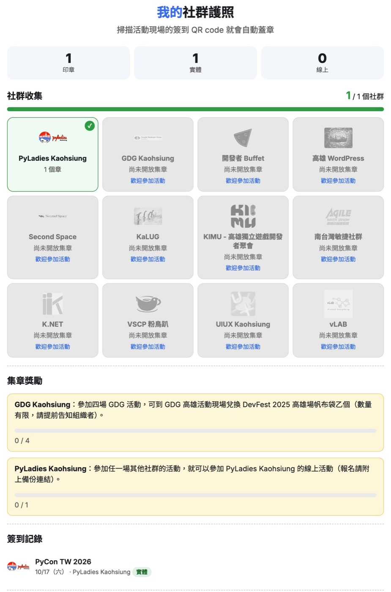
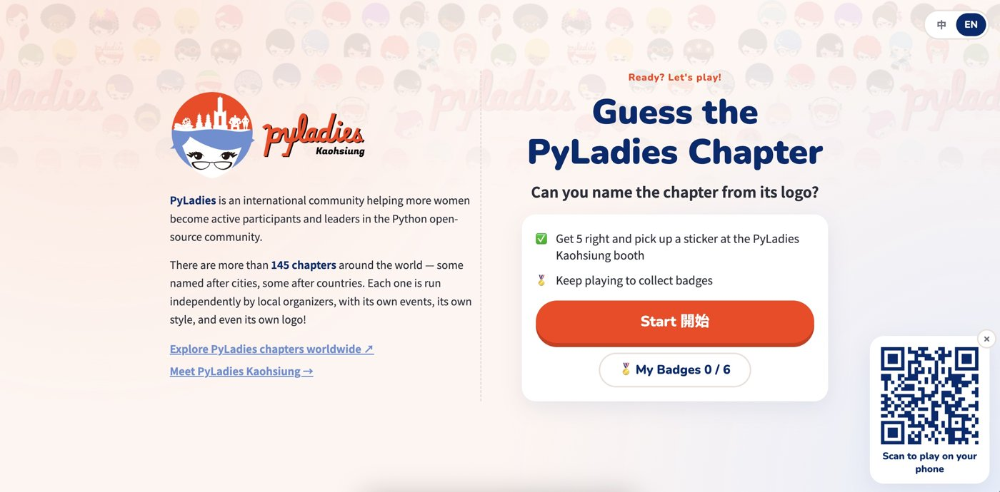
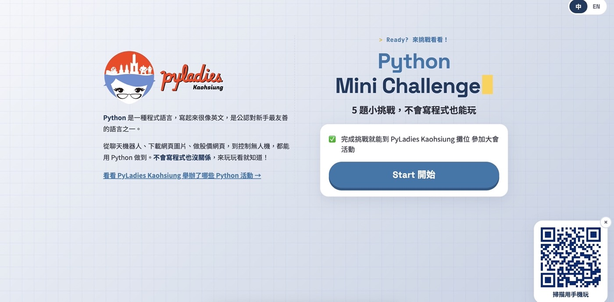

社群作品
# we build
技術社群，也自己開發工具
以免伺服器費用、精簡化架構為原則，讓社群可以長期、低成本地運作。

01
PyLadies Kaohsiung 自用
Discord Bot
為什麼要做
審核制在 KKTIX＋Google Meet 上很難執行：審核結果不會通知報名者、志工要人工比對簽到名單放行線上活動參與。
成果
- 收斂至單一平台：報名、審核、簽到、線上活動都在 Discord 完成。
- 自動化審核：自動檢查、自定義範本與即時通知，減少跨平台操作。
- 一鍵活動簽到：自動加入線上活動，減輕志工負擔。
- Python
- GCE e2-micro
- SQLite
- Google Sheet
- Cloudflare Worker
- healthchecks.io


02
高雄社群共用
高雄社群護照2027 年元旦正式全面啟航
高雄社群名牌卡從實體名牌卡更改成線上護照：參加高雄社群活動，掃描 QR Code 就能集章！支援實體與線上活動，讓每一次社群參與都能留下紀錄。
為什麼要做
在 2025、2026 兩年的實體名牌卡推行過程中，高雄社群的組織者們也累積了一些使用經驗，例如實體卡印製與發放不易、人工蓋章與核對較繁瑣，以及容易與各自社群的名牌卡混淆等問題。
PyLadies Kaohsiung 希望鼓勵更多人參與高雄在地社群活動，也希望讓其他社群的參與者有機會加入我們開放的線上活動。因此，我們需要一個能證明「參與過高雄社群活動」的工具，同時我們也不希望各社群為此額外架設服務，增加伺服器成本與資安風險。
成果
- 免伺服器、免註冊：純靜態網頁，社群無須額外維護服務。
- QR Code 數位集章：透過社群金鑰簽章驗證，降低偽造風險。
- 支援實體與線上活動：不同形式使用不同印章，同場活動只保留一個章。
- 主辦方工具：提供金鑰管理、QR Code 簽發與活動補簽。
- 參與紀錄備份與分享：可透過備份連結分享參與證明，並由主辦方驗證。
- HTML / JavaScript
- GitHub Pages
- Web Crypto（ECDSA 簽章）
- localStorage


03
PyLadies Kaohsiung 自用
攤位互動遊戲
為什麼要做
參與技術活動擺攤時，希望讓更多人認識 PyLadies。除了傳統的社群介紹，也希望透過簡單有趣的互動遊戲，讓訪客在遊戲中認識 PyLadies 的社群特色。透過遊戲傳遞社群資訊，也能減輕志工重複介紹的負擔，讓現場交流有更多延伸的空間。
成果
- 線上互動遊戲：
- Python 社群交流：Guess the PyLadies Chapter
- 技術社群交流：Python Mini Challenge
- QR Code 快速進入：掃描即可遊玩，不需要額外安裝或註冊。
- 降低志工負擔：透過遊戲傳遞社群資訊，減少重複介紹。
- 免印製、易更新：遊戲內容線上維護，減少實體印刷與準備成本。
- 跨活動重複使用：同一套遊戲可應用於不同活動與社群攤位。